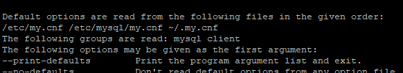

How do I find the MySQL my.cnf location
Is there a MySQL command to locate the my.cnf configuration file, similar to
how PHP's phpinfo() locates its php.ini?
Answer
There is no internal MySQL command to trace this, it's a little too abstract. The file might be in 5 (or more?) locations, and they would all be valid because they load cascading.
- /etc/my.cnf
- /etc/mysql/my.cnf
- $MYSQL_HOME/my.cnf
- [datadir]/my.cnf
- ~/.my.cnf
Those are the default locations MySQL looks at. If it finds more than one, it
will load each of them & values override each other (in the listed order, I
think). Also, the --defaults-file parameter can override the whole thing,
so... basically, it's a huge pain in the butt.
But thanks to it being so confusing, there's a good chance it's just in /etc/my.cnf.
(If you just want to see the values: SHOW VARIABLES, but you'll need the
permissions to do so.)
Run mysql --help and you will see:
Default options are read from the following files in the given order:
/etc/my.cnf /etc/mysql/my.cnf ~/.my.cnf

Suggest
You can actually "request" MySQL for a list of all locations where it searches for my.cnf (or my.ini on Windows). It is not an SQL query though. Rather, execute:
$ mysqladmin --help
or, prior 5.7:
$ mysqld --help --verbose
In the very first lines you will find a message with a list of all my.cnf locations it looks for. On my machine it is:
Default options are read from the following files in the given order: /etc/my.cnf /etc/mysql/my.cnf /usr/etc/my.cnf ~/.my.cnf
Or, on Windows:
Default options are read from the following files in the given order: C:\Windows\my.ini C:\Windows\my.cnf C:\my.ini C:\my.cnf C:\Program Files\MySQL\MySQL Server 5.5\my.ini C:\Program Files\MySQL\MySQL Server 5.5\my.cnf
Note however, that it might be the case that there is no my.cnf file at any
of these locations. So, you can create the file on your own - use one of the
sample config files provided with MySQL distribution (on Linux - see
/usr/share/mysql/*.cnf files and use whichever is appropriate for you - copy
it to /etc/my.cnf and then modify as needed).
Also, note that there is also a command line option--defaults-file which
may define custom path to my.cnf or my.ini file. For example, this is the case
for MySQL 5.5 on Windows - it points to a my.ini file in the data directory,
which is not normally listed with mysqld --help --verbose. On Windows - see
service properties to find out if this is the case for you.
Finally, check the https://dev.mysql.com/doc/refman/8.0/en/option-files.html - it is described there in more details.